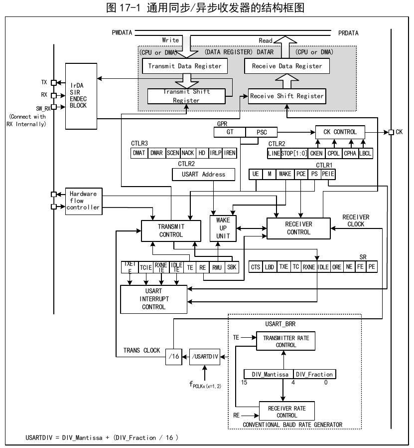
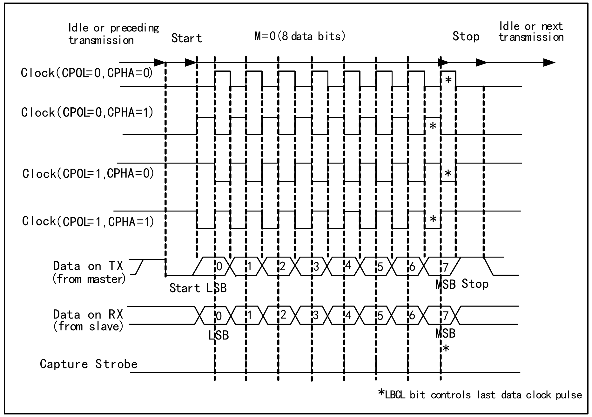
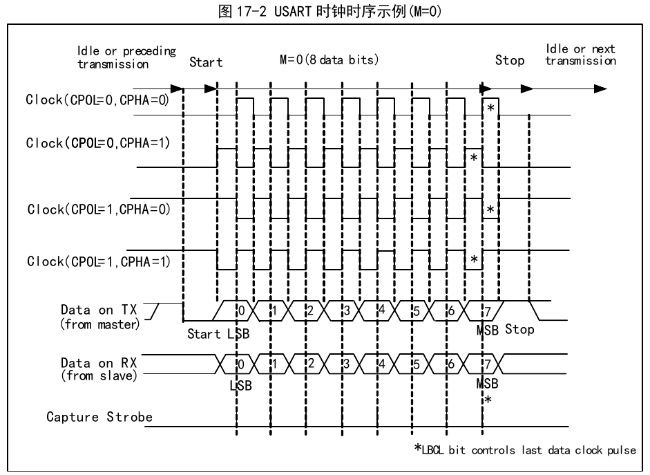
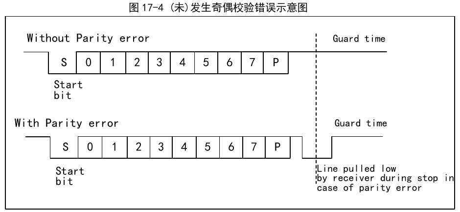

This module contains 10 universal synchronous/asynchronous receiver transmitters (USART1/2/3/4/5/6/7/8/9/10).

When TE (transmit enable bit) is set, data in the transmit shift register is output on the TX pin, and the clock is output on the CK pin. During transmission, the least significant bit is shifted out first; each data frame begins with a low-level start bit, then the transmitter sends an 8-bit or 9-bit data word according to the setting of the M (word length) bit, followed by a configurable number of stop bits. If parity is enabled, the last bit of the data word is the parity bit. After TE is set, an idle frame is sent; the idle frame is 10 or 11 bits of high level, including the stop bit. A break frame is 10 or 11 bits of low level followed by a stop bit.
The baud rate of the transceiver = FCLK / (16 × USARTDIV), where FCLK is the clock of PBx, i.e. PCLK1 or PCLK2. The USART1 module uses PCLK2, and all others use PCLK1. The value of USARTDIV is determined by the DIV_M and DIV_F fields in USART_BRR. The calculation formula is:
USARTDIV = DIV_M + (DIV_F / 16)
When the serial waveform sent by the transmitter reaches the receiver, there is a certain error between the receiver's and the transmitter's baud rates. The error mainly comes from three aspects: the actual baud rates of the receiver and transmitter are inconsistent; the clocks of the receiver and transmitter have errors; and the waveform changes as it propagates over the line. The receiver of the peripheral module has a certain tolerance capacity. When the sum of the total deviations from the above three aspects is less than the module's tolerance limit, the total deviation does not affect communication. The module's tolerance limit is affected by whether fractional baud rate is used and the M bit (data field word length). Using fractional baud rate and a 9-bit data field length reduces the tolerance limit, but not below 3%.
The synchronous mode allows the system to output a clock signal when using the USART module. When synchronous mode is enabled and data is being transmitted, the CK pin simultaneously outputs the clock.
Synchronous mode is enabled by setting the CLKEN bit in control register 2 (R16_USARTx_CTLR2). At the same time, LIN mode, smart card mode, IrDA mode, and half-duplex mode must be disabled, i.e. the SCEN, HDSEL, and IREN bits must be in the reset state. These three bits are in control register 3 (R16_USARTx_CTLR3).
The key point of synchronous mode is the control of clock output. The following should be noted:


Half-duplex mode supports using a single pin (only the TX pin) for both receiving and transmitting. The TX pin and RX pin are connected internally within the chip.
Half-duplex mode is enabled by setting the HDSEL bit in control register 3 (R16_USARTx_CTLR3). At the same time, LIN mode, smart card mode, IrDA mode, and synchronous mode must be disabled, i.e. the SCEN, CLKEN, and IREN bits must be in the reset state. These three bits are in control registers 2 and 3 (R16_USARTx_CTLR2 and R16_USARTx_CTLR3).
After configuring half-duplex mode, the TX I/O pin should be set to open-drain output-high mode. When TE is set, writing data to the data register will send it out. In particular, note that in half-duplex mode, bus conflicts may occur when multiple devices use a single bus for transmission and reception; the user must avoid this through software.
Smart card mode supports the ISO7816-3 protocol for accessing smart card controllers.
Smart card mode is enabled by setting the SCEN bit in control register 3 (R16_USARTx_CTLR3). At the same time, LIN mode, half-duplex mode, and IrDA mode must be disabled, i.e. the LINEN, HDSEL, and IREN bits must be in the reset state. However, CLKEN can be enabled to output a clock. These bits are in control registers 2 and 3 (R16_USARTx_CTLR2 and R16_USARTx_CTLR3).
To support smart card mode, the USART should be configured for 8 data bits plus 1 parity bit. The stop bits are recommended to be set to 1.5 bits for both transmission and reception. Smart card mode is a single-wire half-duplex protocol that uses the TX line for data communication and should be configured as open-drain output with a pull-up. When the receiver detects a parity error while receiving a frame, it sends a NACK signal during the stop bit period by actively pulling TX low for one cycle. When the transmitter detects the NACK signal, a frame error is generated, and the application can use this to retransmit. Figure 17-4 shows the waveform on the TX pin for both the correct case and the case with a parity error. The TC flag (transmission complete flag) of the USART can be delayed by GT (guard time) clock cycles, and the receiver will not interpret its own NACK signal as a start bit.

In smart card mode, when the CK pin is enabled, the output waveform is unrelated to communication; it only provides a clock to the smart card. Its value is the PB clock divided by a configurable 5-bit clock divider (the divider value is twice the PSC value, with a maximum division of 62).
The USART module supports controlling an IrDA infrared transceiver for physical layer communication. To use IrDA, the LINEN, STOP, CLKEN, SCEN, and HDSEL bits must be cleared. The USART module and the SIR physical layer (infrared transceiver) use NRZ (non-return-to-zero) encoding, supporting rates up to 115200 bps.
IrDA is a half-duplex protocol. If the USART is sending data to the SIR physical layer, the IrDA decoder will ignore newly received infrared signals. If the USART is receiving data from the SIR, the SIR will not accept signals from the USART. The logic levels for USART-to-SIR and SIR-to-USART are different: in SIR receive logic, high level is 1 and low level is 0, but in SIR transmit logic, high level is 0 and low level is 1.
The USART module supports DMA functionality, which can be used for fast continuous transmission and reception. When DMA is enabled, the DMA writes data from the configured memory space to the transmit buffer whenever TXE is set. When using DMA for reception, each time RXNE is set, the DMA transfers the data from the receive buffer to a specific memory space.
The USART module supports multiple interrupt sources, including transmit data register empty (TXE), CTS, transmission complete (TC), receive data ready (RXNE), data overrun (ORE), line idle (IDLE), parity error (PE), break flag (LBD), noise (NE), overrun in multi-buffer communication (ORT), and frame error (FE), etc.
| Interrupt source | Enable bit |
|---|---|
| Transmit data register empty (TXE) | TXEIE |
| CTS enable (CTS) | CTSIE |
| Transmission complete (TC) | TCIE |
| Receive data ready (RXNE) | RXNEIE |
| Data overrun (ORE) | |
| Line idle (IDLE) | IDLEIE |
| Parity error (PE) | PEIE |
| Break flag (LBD) | LBDIE |
| Noise (NE) | EIE |
| Overrun in multi-buffer communication (ORT) | |
| Frame error in multi-buffer communication (FE) |
| Name | Address | Description | Reset Value |
|---|---|---|---|
| R32_USART1_STATR | 0x40013800 | USART1 status register | 0x000000C0 |
| R32_USART1_DATAR | 0x40013804 | USART1 data register | 0x000000XX |
| R32_USART1_BRR | 0x40013808 | USART1 baud rate register | 0x00000000 |
| R32_USART1_CTLR1 | 0x4001380C | USART1 control register 1 | 0x00000000 |
| R32_USART1_CTLR2 | 0x40013810 | USART1 control register 2 | 0x00000000 |
| R32_USART1_CTLR3 | 0x40013814 | USART1 control register 3 | 0x00000000 |
| R32_USART1_GPR | 0x40013818 | USART1 guard time and prescaler register | 0x00000000 |
| R32_USART1_CTRL4 | 0x4001381C | USART1 control register 4 | 0x00000000 |
| Name | Address | Description | Reset Value |
|---|---|---|---|
| R32_USART2_STATR | 0x40004400 | USART2 status register | 0x000000C0 |
| R32_USART2_DATAR | 0x40004404 | USART2 data register | 0x000000XX |
| R32_USART2_BRR | 0x40004408 | USART2 baud rate register | 0x00000000 |
| R32_USART2_CTLR1 | 0x4000440C | USART2 control register 1 | 0x00000000 |
| R32_USART2_CTLR2 | 0x40004410 | USART2 control register 2 | 0x00000000 |
| R32_USART2_CTLR3 | 0x40004414 | USART2 control register 3 | 0x00000000 |
| R32_USART2_GPR | 0x40004418 | USART2 guard time and prescaler register | 0x00000000 |
| R32_USART2_CTRL4 | 0x4000441C | USART2 control register 4 | 0x00000000 |
| Name | Address | Description | Reset Value |
|---|---|---|---|
| R32_USART3_STATR | 0x40004800 | USART3 status register | 0x000000C0 |
| R32_USART3_DATAR | 0x40004804 | USART3 data register | 0x000000XX |
| R32_USART3_BRR | 0x40004808 | USART3 baud rate register | 0x00000000 |
| R32_USART3_CTLR1 | 0x4000480C | USART3 control register 1 | 0x00000000 |
| R32_USART3_CTLR2 | 0x40004810 | USART3 control register 2 | 0x00000000 |
| R32_USART3_CTLR3 | 0x40004814 | USART3 control register 3 | 0x00000000 |
| R32_USART3_GPR | 0x40004818 | USART3 guard time and prescaler register | 0x00000000 |
| R32_USART3_CTRL4 | 0x4000481C | USART3 control register 4 | 0x00000000 |
| Name | Address | Description | Reset Value |
|---|---|---|---|
| R32_USART4_STATR | 0x40004C00 | USART4 status register | 0x000000C0 |
| R32_USART4_DATAR | 0x40004C04 | USART4 data register | 0x000000XX |
| R32_USART4_BRR | 0x40004C08 | USART4 baud rate register | 0x00000000 |
| R32_USART4_CTLR1 | 0x40004C0C | USART4 control register 1 | 0x00000000 |
| R32_USART4_CTLR2 | 0x40004C10 | USART4 control register 2 | 0x00000000 |
| R32_USART4_CTLR3 | 0x40004C14 | USART4 control register 3 | 0x00000000 |
| R32_USART4_GPR | 0x40004C18 | USART4 guard time and prescaler register | 0x00000000 |
| R32_USART4_CTRL4 | 0x40004C1C | USART4 control register 4 | 0x00000000 |
| Name | Address | Description | Reset Value |
|---|---|---|---|
| R32_USART5_STATR | 0x40005000 | USART5 status register | 0x000000C0 |
| R32_USART5_DATAR | 0x40005004 | USART5 data register | 0x00000000 |
| R32_USART5_BRR | 0x40005008 | USART5 baud rate register | 0x00000000 |
| R32_USART5_CTLR1 | 0x4000500C | USART5 control register 1 | 0x00000000 |
| R32_USART5_CTLR2 | 0x40005010 | USART5 control register 2 | 0x00000000 |
| R32_USART5_CTLR3 | 0x40005014 | USART5 control register 3 | 0x00000000 |
| R32_USART5_GPR | 0x40005018 | USART5 guard time and prescaler register | 0x00000000 |
| R32_USART5_CTRL4 | 0x4000501C | USART5 control register 4 | 0x00000000 |
| Name | Address | Description | Reset Value |
|---|---|---|---|
| R32_USART6_STATR | 0x40001800 | USART6 status register | 0x000000C0 |
| R32_USART6_DATAR | 0x40001804 | USART6 data register | 0x00000000 |
| R32_USART6_BRR | 0x40001808 | USART6 baud rate register | 0x00000000 |
| R32_USART6_CTLR1 | 0x4000180C | USART6 control register 1 | 0x00000000 |
| R32_USART6_CTLR2 | 0x40001810 | USART6 control register 2 | 0x00000000 |
| R32_USART6_CTLR3 | 0x40001814 | USART6 control register 3 | 0x00000000 |
| R32_USART6_GPR | 0x40001818 | USART6 guard time and prescaler register | 0x00000000 |
| R32_USART6_CTRL4 | 0x4000181C | USART6 control register 4 | 0x00000000 |
| Name | Address | Description | Reset Value |
|---|---|---|---|
| R32_USART7_STATR | 0x40001C00 | USART7 status register | 0x000000C0 |
| R32_USART7_DATAR | 0x40001C04 | USART7 data register | 0x00000000 |
| R32_USART7_BRR | 0x40001C08 | USART7 baud rate register | 0x00000000 |
| R32_USART7_CTLR1 | 0x40001C0C | USART7 control register 1 | 0x00000000 |
| R32_USART7_CTLR2 | 0x40001C10 | USART7 control register 2 | 0x00000000 |
| R32_USART7_CTLR3 | 0x40001C14 | USART7 control register 3 | 0x00000000 |
| R32_USART7_GPR | 0x40001C18 | USART7 guard time and prescaler register | 0x00000000 |
| R32_USART7_CTRL4 | 0x40001C1C | USART7 control register 4 | 0x00000000 |
| Name | Address | Description | Reset Value |
|---|---|---|---|
| R32_USART8_STATR | 0x40002000 | USART8 status register | 0x000000C0 |
| R32_USART8_DATAR | 0x40002004 | USART8 data register | 0x00000000 |
| R32_USART8_BRR | 0x40002008 | USART8 baud rate register | 0x00000000 |
| R32_USART8_CTLR1 | 0x4000200C | USART8 control register 1 | 0x00000000 |
| R32_USART8_CTLR2 | 0x40002010 | USART8 control register 2 | 0x00000000 |
| R32_USART8_CTLR3 | 0x40002014 | USART8 control register 3 | 0x00000000 |
| R32_USART8_GPR | 0x40002018 | USART8 guard time and prescaler register | 0x00000000 |
| R32_USART8_CTRL4 | 0x4000201C | USART8 control register 4 | 0x00000000 |
| Name | Address | Description | Reset Value |
|---|---|---|---|
| R32_USART9_STATR | 0x40007800 | USART9 status register | 0x000000C0 |
| R32_USART9_DATAR | 0x40007804 | USART9 data register | 0x00000000 |
| R32_USART9_BRR | 0x40007808 | USART9 baud rate register | 0x00000000 |
| R32_USART9_CTLR1 | 0x4000780C | USART9 control register 1 | 0x00000000 |
| R32_USART9_CTLR2 | 0x40007810 | USART9 control register 2 | 0x00000000 |
| R32_USART9_CTLR3 | 0x40007814 | USART9 control register 3 | 0x00000000 |
| R32_USART9_GPR | 0x40007818 | USART9 guard time and prescaler register | 0x00000000 |
| R32_USART9_CTRL4 | 0x4000781C | USART9 control register 4 | 0x00000000 |
| Name | Address | Description | Reset Value |
|---|---|---|---|
| R32_USART10_STATR | 0x40007C00 | USART10 status register | 0x000000C0 |
| R32_USART10_DATAR | 0x40007C04 | USART10 data register | 0x00000000 |
| R32_USART10_BRR | 0x40007C08 | USART10 baud rate register | 0x00000000 |
| R32_USART10_CTLR1 | 0x40007C0C | USART10 control register 1 | 0x00000000 |
| R32_USART10_CTLR2 | 0x40007C10 | USART10 control register 2 | 0x00000000 |
| R32_USART10_CTLR3 | 0x40007C14 | USART10 control register 3 | 0x00000000 |
| R32_USART10_GPR | 0x40007C18 | USART10 guard time and prescaler register | 0x00000000 |
| R32_USART10_CTRL4 | 0x40007C1C | USART10 control register 4 | 0x00000000 |
Offset address: 0x00
| 31 | 30 | 29 | 28 | 27 | 26 | 25 | 24 | 23 | 22 | 21 | 20 | 19 | 18 | 17 | 16 |
|---|---|---|---|---|---|---|---|---|---|---|---|---|---|---|---|
| Reserved | |||||||||||||||
| 15 | 14 | 13 | 12 | 11 | 10 | 9 | 8 | 7 | 6 | 5 | 4 | 3 | 2 | 1 | 0 |
| Reserved | MS_ERR | RX_BUSY | CTS | LBD | TXE | TC | RXNE | IDLE | ORE | NE | FE | PE | |||
| Bits | Name | Access | Description | Reset |
|---|---|---|---|---|
| [31:12] | Reserved | RO | Reserved. | 0 |
| 11 | MS_ERR | RO | MARK or SPACE parity error flag. In receive mode, if a MARK or SPACE parity error occurs, hardware sets this bit. Reading this bit followed by reading the data register resets this bit. If MS_ERRIE was previously set, setting this bit generates a corresponding interrupt. | 0 |
| 10 | RX_BUSY | RO | Receive status indication bit: 1: This bit is set when operating in receive state; 0: Not in receive state. | 0 |
| 9 | CTS | RW0 | CTS status change flag. If the CTSE bit is set, this bit is set by hardware when the nCTS output state changes. Cleared by software. If the CTSIE bit is already set, an interrupt is generated. 1: A change is detected on the nCTS status line; 0: No change on the nCTS status line. | 0 |
| 8 | LBD | RW0 | LIN break detection flag. When a LIN break is detected, this bit is set by hardware. Cleared by software. If LBDIE is already set, an interrupt is generated. 1: LIN break detected; 0: No LIN break detected. | 0 |
| 7 | TXE | RO | Transmit data register empty flag. When the data in the TDR register is transferred to the shift register by hardware, this bit is set by hardware. If TXEIE is already set, an interrupt is generated. Writing to the data register resets this bit. 1: Data has been transferred to the shift register; 0: Data has not been transferred to the shift register. | 1 |
| 6 | TC | RW0 | Transmission complete flag. When a frame containing data has been sent and TXE is set, hardware sets this bit. If TCIE is set, a corresponding interrupt is generated. Reading this bit followed by writing to the data register clears this bit. It can also be cleared by writing 0 directly. 1: Transmission complete; 0: Transmission not yet complete. | 1 |
| 5 | RXNE | RW0 | Read data register not empty flag. When data from the shift register is transferred to the data register, this bit is set by hardware. If RXNEIE is already set, a corresponding interrupt is generated. Reading the data register clears this bit. It can also be cleared by writing 0 directly. 1: Data received and can be read; 0: Data not yet received. | 0 |
| 4 | IDLE | RO | Bus idle flag. When the bus is idle, this bit is set by hardware. If IDLEIE is already set, a corresponding interrupt is generated. Reading the status register followed by reading the data register clears this bit. 1: Bus is idle; 0: No bus idle detected. Note: This bit will not be set again until RXNE is set. | 0 |
| 3 | ORE | RO | Overrun error flag. When the receive shift register has data to transfer to the data register but the receive field of the data register still has unread data, this bit is set. If RXNEIE is set, a corresponding interrupt is generated. 1: Overrun error occurred; 0: No overrun error. Note: When an overrun error occurs, the value in the data register is not lost, but the value in the shift register is overwritten. If the EIE bit is set, in multi-buffer communication mode, setting the ORE flag generates an interrupt. | 0 |
| 2 | NE | RO | Noise error flag. When a noise error is detected, this bit is set by hardware. Reading the status register followed by reading the data register resets this bit. 1: Noise detected; 0: No noise detected. Note: This bit does not generate an interrupt. If the EIE bit is set, in multi-buffer communication mode, setting the NE flag generates an interrupt. | 0 |
| 1 | FE | RO | Frame error flag. When a synchronization error, excessive noise, or a break character is detected, this bit is set by hardware. Reading this bit followed by reading the data register resets this bit. 1: Frame error detected; 0: No frame error detected. Note: This bit does not generate an interrupt. If the EIE bit is set, in multi-buffer communication mode, setting the FE flag generates an interrupt. | 0 |
| 0 | PE | RO | Parity error flag. In receive mode, if a parity error occurs, hardware sets this bit. Reading this bit followed by reading the data register resets this bit. Before clearing this bit, software must wait for the RXNE flag to be set. If PEIE was previously set, setting this bit generates a corresponding interrupt. 1: Parity error occurred; 0: No parity error. | 0 |
Offset address: 0x04
| 31 | 30 | 29 | 28 | 27 | 26 | 25 | 24 | 23 | 22 | 21 | 20 | 19 | 18 | 17 | 16 |
|---|---|---|---|---|---|---|---|---|---|---|---|---|---|---|---|
| Reserved | |||||||||||||||
| 15 | 14 | 13 | 12 | 11 | 10 | 9 | 8 | 7 | 6 | 5 | 4 | 3 | 2 | 1 | 0 |
| Reserved | DR[8:0] | ||||||||||||||
| Bits | Name | Access | Description | Reset |
|---|---|---|---|---|
| [31:9] | Reserved | RO | Reserved. | 0 |
| [8:0] | DR[8:0] | RW | Data register. This register is actually composed of two registers: the receive data register (RDR) and the transmit data register (TDR). Read and write operations on DR are effectively reading the RDR and writing the TDR, respectively. | X |
Offset address: 0x08
| 31 | 30 | 29 | 28 | 27 | 26 | 25 | 24 | 23 | 22 | 21 | 20 | 19 | 18 | 17 | 16 |
|---|---|---|---|---|---|---|---|---|---|---|---|---|---|---|---|
| Reserved | |||||||||||||||
| 15 | 14 | 13 | 12 | 11 | 10 | 9 | 8 | 7 | 6 | 5 | 4 | 3 | 2 | 1 | 0 |
| DIV_Mantissa[11:0] | DIV_Fraction[3:0] | ||||||||||||||
| Bits | Name | Access | Description | Reset |
|---|---|---|---|---|
| [31:16] | Reserved | RO | Reserved. | 0 |
| [15:4] | DIV_Mantissa[11:0] | RW | These 12 bits define the integer part of the divider factor. | 0 |
| [3:0] | DIV_Fraction[3:0] | RW | These 4 bits define the fractional part of the divider factor. | 0 |
Offset address: 0x0C
| 31 | 30 | 29 | 28 | 27 | 26 | 25 | 24 | 23 | 22 | 21 | 20 | 19 | 18 | 17 | 16 |
|---|---|---|---|---|---|---|---|---|---|---|---|---|---|---|---|
| Reserved | |||||||||||||||
| 15 | 14 | 13 | 12 | 11 | 10 | 9 | 8 | 7 | 6 | 5 | 4 | 3 | 2 | 1 | 0 |
| M_EXT[1:0] | UE | M | WAKE | PCE | PS | PEIE | TXEIE | TCIE | RXNEIE | IDLEIE | TE | RE | RWU | SBK | |
| Bits | Name | Access | Description | Reset |
|---|---|---|---|---|
| [31:16] | Reserved | RO | Reserved. | 0 |
| [15:14] | M_EXT[1:0] | RW | Word length extension bits: 00: Invalid, the M bit determines the data length. 01: 7 data bits; 10: 6 data bits; 11: 5 data bits. | 0 |
| 13 | UE | RW | USART enable bit. When this bit is cleared, after the current byte transmission completes, the USART divider and outputs stop working. | 0 |
| 12 | M | RW | Word length bit. 1: 9 data bits; 0: 8 data bits. | 0 |
| 11 | WAKE | RW | Wakeup bit. This bit determines the method for waking up the USART: 1: Address mark; 0: Bus idle. | 0 |
| 10 | PCE | RW | Parity control enable. 1: Parity control enabled; 0: Parity control disabled. For the receiver, it performs parity checking on data; for the transmitter, it inserts the parity bit. Once this bit is set, parity control only takes effect after the current byte transmission completes. | 0 |
| 9 | PS | RW | Parity selection: 1: Odd parity; 0: Even parity. After setting this bit, parity control only takes effect after the current byte transmission completes. | 0 |
| 8 | PEIE | RW | Parity error interrupt enable bit. 1: Parity error interrupt enabled; 0: Parity error interrupt disabled. | 0 |
| 7 | TXEIE | RW | Transmit buffer empty interrupt enable: 1: Transmit buffer empty interrupt enabled; 0: Transmit buffer empty interrupt disabled. | 0 |
| 6 | TCIE | RW | Transmission complete interrupt enable: 1: Transmission complete interrupt enabled; 0: Transmission complete interrupt disabled. | 0 |
| 5 | RXNEIE | RW | Receive buffer not empty interrupt enable: 1: Receive buffer not empty interrupt enabled; 0: Receive buffer not empty interrupt disabled. | 0 |
| 4 | IDLEIE | RW | Bus idle interrupt enable: 1: Bus idle interrupt enabled; 0: Bus idle interrupt disabled. | 0 |
| 3 | TE | RW | Transmit enable. 1: Transmitter enabled; 0: Transmitter disabled. | 0 |
| 2 | RE | RW | Receive enable. 1: Receiver enabled, the receiver begins detecting start bits on the RX pin; 0: Receiver disabled. | 0 |
| 1 | RWU | RW | Receive wakeup. This bit determines whether to place the USART in mute mode: 1: Receiver in mute mode; 0: Receiver in normal operating mode. Note 1: Before setting the RWU bit, the USART must first receive a data byte; otherwise, in mute mode, it cannot be woken up by bus idle. Note 2: When configured for address mark wakeup, the RWU bit cannot be modified by software while RXNE is set. | 0 |
| 0 | SBK | RW | Send break character control bit. Set this bit to send a break character. It is reset by hardware during the stop bit of the break frame. 1: Send; 0: Do not send. | 0 |
Offset address: 0x10
| 31 | 30 | 29 | 28 | 27 | 26 | 25 | 24 | 23 | 22 | 21 | 20 | 19 | 18 | 17 | 16 |
|---|---|---|---|---|---|---|---|---|---|---|---|---|---|---|---|
| Reserved | |||||||||||||||
| 15 | 14 | 13 | 12 | 11 | 10 | 9 | 8 | 7 | 6 | 5 | 4 | 3 | 2 | 1 | 0 |
| Reserved | LINEN | STOP | CLKEN | CPOL | CPHA | LBCL | Reserved | LBDIE | LBDL | Reserved | ADD[3:0] | ||||
| Bits | Name | Access | Description | Reset |
|---|---|---|---|---|
| [31:15] | Reserved | RO | Reserved. | 0 |
| 14 | LINEN | RW | LIN mode enable bit. Setting this bit enables LIN mode. In LIN mode, the SBK bit can be used to send LIN break characters and to detect LIN break characters. | 0 |
| [13:12] | STOP | RW | Stop bit setting field. These two bits set the stop bits. 00: 1 stop bit; 01: 0.5 stop bits; 10: 2 stop bits; 11: 1.5 stop bits. | 00b |
| 11 | CLKEN | RW | Clock enable, enables the CK pin. 1: Enabled; 0: Disabled. | 0 |
| 10 | CPOL | RW | Clock polarity setting bit. In synchronous mode, this bit selects the polarity of the clock output on the SCLK pin, combined with CPHA to produce the required clock/data sampling relationship. 1: CK pin stays high when bus is idle; 0: CK pin stays low when bus is idle. Note: This bit cannot be modified after the transmitter is enabled. | 0 |
| 9 | CPHA | RW | Clock phase setting bit. In synchronous mode, this bit selects the phase of the clock output on the SCLK pin, combined with CPOL to produce the required clock/data sampling relationship. 1: Data capture on the second edge of the clock; 0: Data capture on the first edge of the clock. Note: This bit cannot be modified after the transmitter is enabled. | 0 |
| 8 | LBCL | RW | Last clock pulse control bit. In synchronous mode, this bit controls whether the clock pulse corresponding to the last transmitted data byte is output on the CK pin. 1: The clock pulse of the last data bit is not output on CK; 0: The clock pulse of the last data bit is output on CK. Note: This bit cannot be modified after the transmitter is enabled. | 0 |
| 7 | Reserved | RW | Reserved. | 0 |
| 6 | LBDIE | RW | LIN break detection interrupt enable. Setting this bit enables the interrupt caused by LBD. | 0 |
| 5 | LBDL | RW | LIN break detection length. This bit selects whether break detection is 11-bit or 10-bit. 1: 11-bit break detection; 0: 10-bit break detection. | 0 |
| 4 | Reserved | RW | Reserved. | 0 |
| [3:0] | ADD[3:0] | RW | Address field, used to set the USART node address of this device. Used in mute mode during multi-processor communication to wake up a specific USART device using an address mark. | 0 |
Offset address: 0x14
| 31 | 30 | 29 | 28 | 27 | 26 | 25 | 24 | 23 | 22 | 21 | 20 | 19 | 18 | 17 | 16 |
|---|---|---|---|---|---|---|---|---|---|---|---|---|---|---|---|
| Reserved | |||||||||||||||
| 15 | 14 | 13 | 12 | 11 | 10 | 9 | 8 | 7 | 6 | 5 | 4 | 3 | 2 | 1 | 0 |
| Reserved | CTSIE | CTSE | RTSE | DMAT | DMAR | SCEN | NACK | HDSEL | IRLP | IREN | EIE | ||||
| Bits | Name | Access | Description | Reset |
|---|---|---|---|---|
| [31:11] | Reserved | RO | Reserved. | 0 |
| 10 | CTSIE | RW | CTSIE interrupt enable bit: 1: An interrupt is generated when CTS is set; 0: No interrupt is generated when CTS is set. | 0 |
| 9 | CTSE | RW | CTS enable bit: 1: CTS flow control enabled; 0: CTS flow control disabled. | 0 |
| 8 | RTSE | RW | RTS enable bit: 1: RTS flow control enabled; 0: RTS flow control disabled. | 0 |
| 7 | DMAT | RW | DMA transmit enable bit: 1: DMA is used during transmission; 0: DMA is not used during transmission. | 0 |
| 6 | DMAR | RW | DMA receive enable bit: 1: DMA is used during reception; 0: DMA is not used during reception. | 0 |
| 5 | SCEN | RW | Smart card mode enable bit: 1: Smart card mode enabled; 0: Smart card mode disabled. | 0 |
| 4 | NACK | RW | Smart card NACK enable bit: 1: NACK is sent when a parity error occurs; 0: NACK is not sent when a parity error occurs. | 0 |
| 3 | HDSEL | RW | Half-duplex mode selection bit: 1: Half-duplex mode enabled; 0: Half-duplex mode disabled. | 0 |
| 2 | IRLP | RW | Infrared low-power selection bit: 1: Low-power mode enabled when IrDA is selected; 0: Low-power mode disabled when IrDA is selected. | 0 |
| 1 | IREN | RW | Infrared enable bit: 1: IrDA mode enabled; 0: IrDA mode disabled. | 0 |
| 0 | EIE | RW | Error interrupt enable bit: 1: Error interrupt enabled; 0: Error interrupt disabled. When this bit is set, if DMAR is set and FE, ORE, or NE is set, an interrupt is generated. | 0 |
Offset address: 0x18
| 31 | 30 | 29 | 28 | 27 | 26 | 25 | 24 | 23 | 22 | 21 | 20 | 19 | 18 | 17 | 16 |
|---|---|---|---|---|---|---|---|---|---|---|---|---|---|---|---|
| Reserved | |||||||||||||||
| 15 | 14 | 13 | 12 | 11 | 10 | 9 | 8 | 7 | 6 | 5 | 4 | 3 | 2 | 1 | 0 |
| GT[7:0] | PSC[7:0] | ||||||||||||||
| Bits | Name | Access | Description | Reset |
|---|---|---|---|---|
| [31:16] | Reserved | RO | Reserved. | 0 |
| [15:8] | GT[7:0] | RW | Guard time value field. This field specifies the guard time in units of baud rate clock. In smart card mode, the transmission complete flag is only set after the guard time has elapsed. | 0 |
| [7:0] | PSC[7:0] | RW | Prescaler value field. In IrDA low-power mode, the source clock is divided by this value (all 8 bits valid); a value of 0 means reserved. In IrDA normal mode, this bit can only be set to 1. In smart card mode, the source clock is divided by twice this value (lower 5 bits valid) to provide the clock to the smart card; a value of 0 means reserved. | 0 |
Offset address: 0x1C
| 31 | 30 | 29 | 28 | 27 | 26 | 25 | 24 | 23 | 22 | 21 | 20 | 19 | 18 | 17 | 16 | |
|---|---|---|---|---|---|---|---|---|---|---|---|---|---|---|---|---|
| Reserved | ||||||||||||||||
| 15 | 14 | 13 | 12 | 11 | 10 | 9 | 8 | 7 | 6 | 5 | 4 | 3 | 2 | 1 | 0 | |
| Reserved | CHECK_SEL[1:0] | MS_ERRIE | Reserved | |||||||||||||
| Bits | Name | Access | Description | Reset |
|---|---|---|---|---|
| [31:4] | Reserved | RO | Reserved. | 0 |
| [3:2] | CHECK_SEL[1:0] | RW | Check function selection bits: 0x: MARK and SPACE check disabled. 10: MARK check enabled. 11: SPACE check enabled. | 0 |
| 1 | MS_ERRIE | RW | SPACE or MARK check error interrupt enable bit: 1: SPACE or MARK check error interrupt enabled; 0: SPACE or MARK check error interrupt disabled. | 0 |
| 0 | Reserved | RO | Reserved. | 0 |